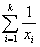
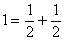
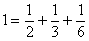

Problem C
Pyramid Number
Input: Standard
Input
Output: Standard
Output
A group of archaeologists have come across a new kind of number pattern while analyzing the hieroglyphs patterns in ‘The not so great pyramid’. They have decided to call these numbers ‘Pyramid numbers’.
A number n is called a Pyramid number if we can partition n into k positive integers xi (1<=i<=k) such that = 1. For example, 
So, 4 (2 + 2) is a Pyramid number.
A number n is called a Strictly Pyramid number if we can partition n into k distinct positive integers xi (1 ≤ i ≤ k) such that = 1. For example,

Here, 11 (2 + 3 + 6) is Strictly Pyramid whereas in the above example, 4 is Pyramid but not Strictly Pyramid.
Given two positive integers a & b, find the number of Strictly Pyramid numbers between a & b (inclusive).
The first line of the input file will contain
an integer T (T<=100), the number of test cases. Each of the following
T lines will be consisting of 2 integers a & b (1 ≤
a, b ≤ 1000000).
For each test case, print an integer which is
the number of Strictly Pyramid numbers between a & b (inclusive).
|
5 1
10 1
11 1
100 70
80 110
120 |
1 2 53 8 11 |
Problemsetter:
Mohammad Mahmudur Rahman
Special
Thanks to: Igor Naverniouk